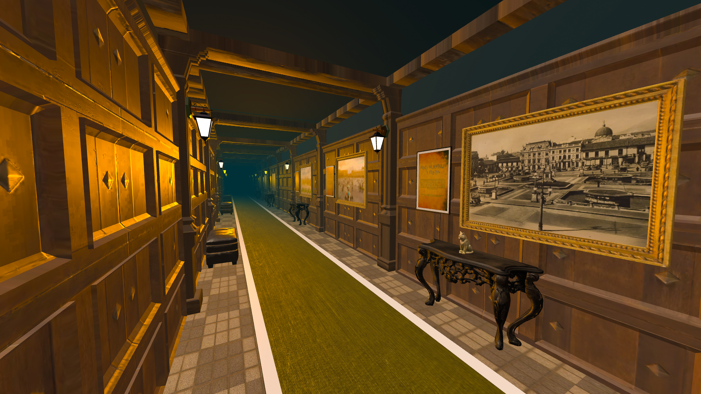

Construyendo otra dimensión...

Un espacio para explorar los contornos y relieves de la ciudad.
Explora el espacio a tu manera. Utiliza las teclas "W A S D" para moverte y el "mouse" para mirar alrededor. Si estás en móvil, toca la pantalla para avanzar.